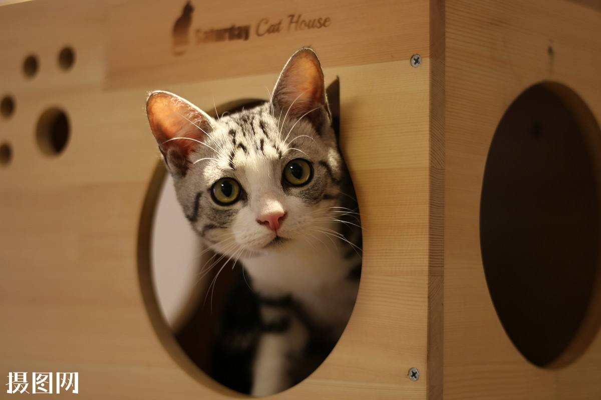

<h1> element
Japanese example: ご飯が熱い。

According to the MDN blockquote page:
The HTML <blockquote> Element (or HTML Block Quotation Element) indicates that the enclosed text is an extended quotation.
The quote element — <q> — is intended for short quotations that don't require paragraph breaks.
-- MDN q page.
- soliloquy
- In drama, where a character speaks to themselves, representing their inner thoughts or feelings and in the process relaying them to the audience (but not to other characters.)
- monologue
- In drama, where a character speaks their thoughts out loud to share them with the audience and any other characters present.
- aside
- In drama, where a character shares a comment only with the audience for humorous or dramatic effect. This is usually a feeling, thought or piece of additional background information.
my-word
到p
p